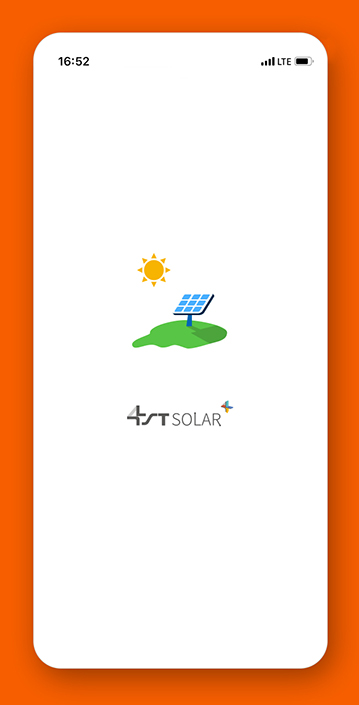
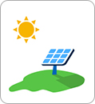
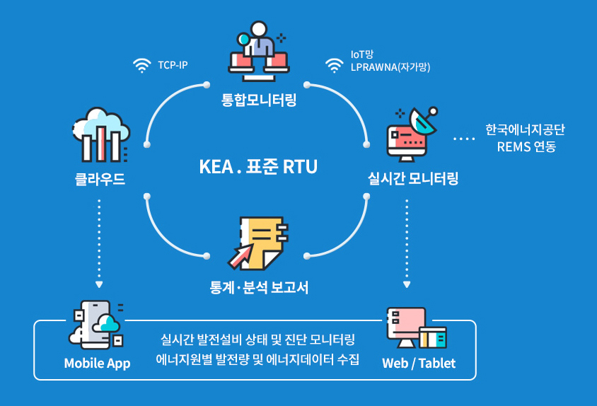
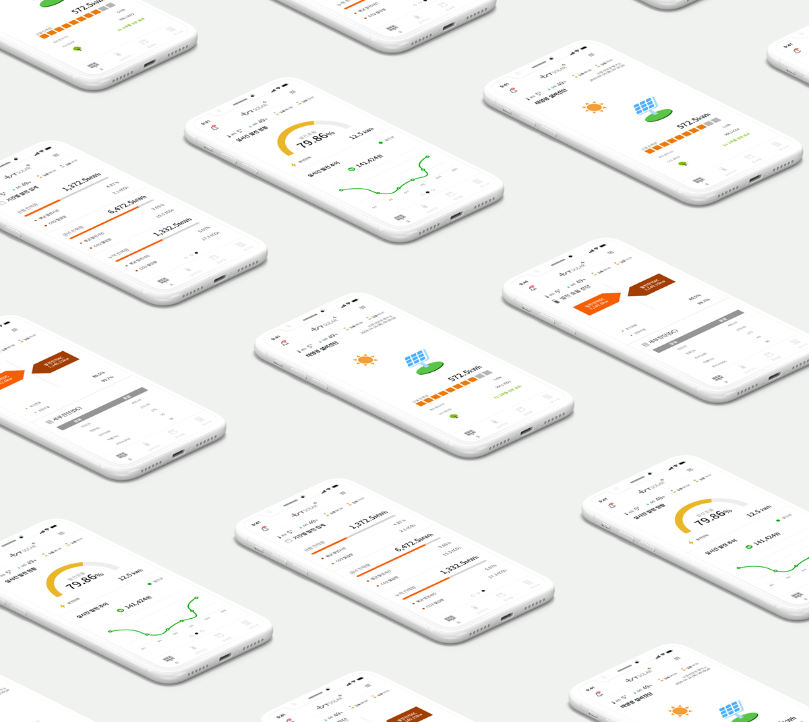
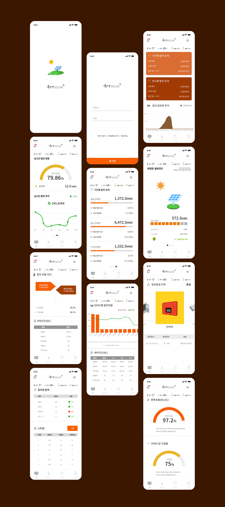
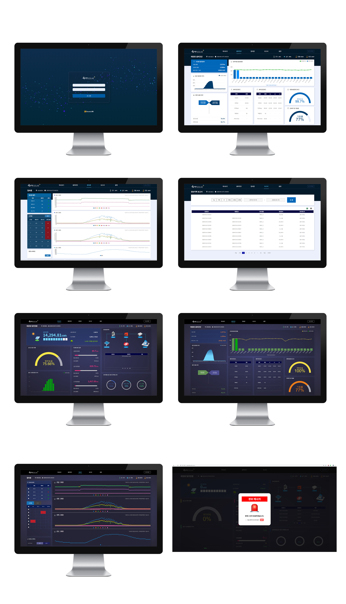
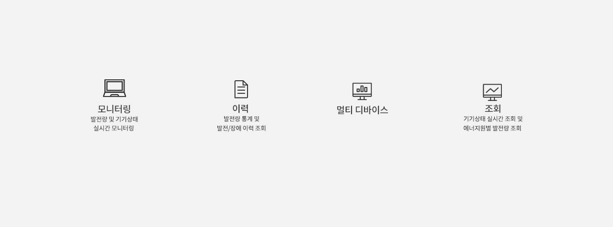

Solar energy
monitoring system


신재생 에너지 통합 모니터링 시스템 REMS
지금까지 통합 모니터링 시스템이 구축되기 전에는,기존 1~4호 태양광 발전소 각각에 사용된 인버터 (태양광 발전소에서 발생한 직류 전력을 교류로 바꿔주는 설비) 메이커에서 제공하는 관리 프로그램을 통해서만 발전소 운전 및 발전량을 확인할 수 있었습니다.
태양광
태양열
지열
연료전지
풍력



REMS
Solar monitoring System
UI DESIGN, PUBLISING

